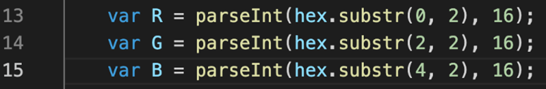

Portfolio werk
Het probleem
Gebruikers willen de banner of knop veranderen op hun website. Als zij de banner kleur veranderen kan het zo zijn dat de knop niet goed te zien is omdat de knop kleur geen goed contrast heeft met de banner kleur.
De oplossing
Feedback krijgen of de kleur die je nu wilt gebruiken licht of donker is zodat de gebruiker weet of het een goed contrast heeft met de knop of achtergrond.
Hierbij ging ik opzoeken hoe je met JavaScript een code kon maken om aan gebruikers te laten zien met een bepaalde HEX waarde kleur of die kleur licht of donker is.
Deze opdracht is samengedaan met Tim. Code 2 bronnen zijn samen gebruikt. (Zie Onderzoek documentatie, blz 1 t/m 2 voor meer informatie)
Het probleem
Gebruikers willen de banner of knop veranderen op hun website. Als zij de banner kleur veranderen kan het zo zijn dat de knop niet goed te zien is omdat de knop kleur geen goed contrast heeft met de banner kleur.
De oplossing
Feedback krijgen of de kleur die je nu wilt gebruiken licht of donker is zodat de gebruiker weet of het een goed contrast heeft met de knop of achtergrond.
Hierbij ging ik opzoeken hoe je met JavaScript een code kon maken om aan gebruikers te laten zien met een bepaalde HEX waarde kleur of die kleur licht of donker is. Deze opdracht is samengedaan met Tim. Code 2 bronnen zijn samen gebruikt. (Zie Onderzoek documentatie, blz 1 t/m 2 voor meer informatie)
Wat heb ik geleerd?
Dit was mijn eerste opdracht waarbij ik Javascript ging gebruiken. Dit is een andere Javascript dan dat ik heb geleerd op school. Dit was helemaal nieuw voor mij. Het was niet een moeilijke opdracht. Het ziet er misschien wel complex uit maar als je het eenmaal onder de knie hebt en begrijpt is het best logisch en is de code niet meer moeilijk.
Gemaakt werk
- Regel:
- 1. Kijken of JS-bestand is gekoppeld aan HTML-bestand.
- 2. Hij maakt de functie aan
- 6. Hij haalt de # weg als de gebruiker #888 type in de console bij regel 26. Gebruikers kunnen dus nu #888 typen of 888.
- 9 t/m 11. Hex waarde kleur heeft meestal 6 cijfers. Maar nu met deze if statement kunnen gebruikers ook 3 cijfers code in typen als de cijfers allemaal hetzelfde zijn.
- 13 t/m 15. Hier maakt hij variables aan voor R G en B met waar hij start. Dus: Hex waarde heeft 6 cijfers. Eerste 2 is de R middelste 2 is de G en laatste 2 is de B.
- 17. Hier maakt hij de luminus aan. (Kleur code)
- 19 t/m 23. Hier gaat hij kijken of de Y (De kleur in de console) kleiner is dan de helft van 255. Als de kleur lager is dan is het een lichte kleur en anders is het een donkere kleur.
Feedback
Regel 13 t/m 15: De vars zijn aangemaakt met 1 regel var. Zou beter zijn om voor al de 3 variabel het woord var te gebruiken ervoor.
Bijvoorbeeld:
Verbetering
2 weken later moest er verandering komen in de code. Met de eerste code kan je zien of de kleur alleen licht of donker is. De bedoeling is beter dat de contrast code naar voren moet komen omdat contrast minimaal een 4.5:1 moet hebben om goede contrast te hebben tussen 2 kleuren. (Background – Tekst erop) Om dat te programmeren is het volgende gemaakt:
- Regel:
- 26. De 1 kleuren worden aangemaakt, op regel 27 en 28 worden ze gekoppeld aan een luminance.
- 31. De berekeningen van de ratio worden gemaakt.
- 43 t/m 45. Door het te delen door 255 wordt de juiste berekening gemaakt voor de luminance.
- 47. Hier wordt een ternary operator (if else statement) uitgelegd: Als R kleiner is dan 0.03… dan doe je R gedeeld door 12.92. Anders doe je math.pow… Deze manier van if else is alleen handig als je echt alleen maar 1 waarde meegeeft aan de if en else. Dit geld ook voor regel 48 en 49.
- 52. Laatste berekening wordt gedaan om de juiste waarde te laten zien in de console.